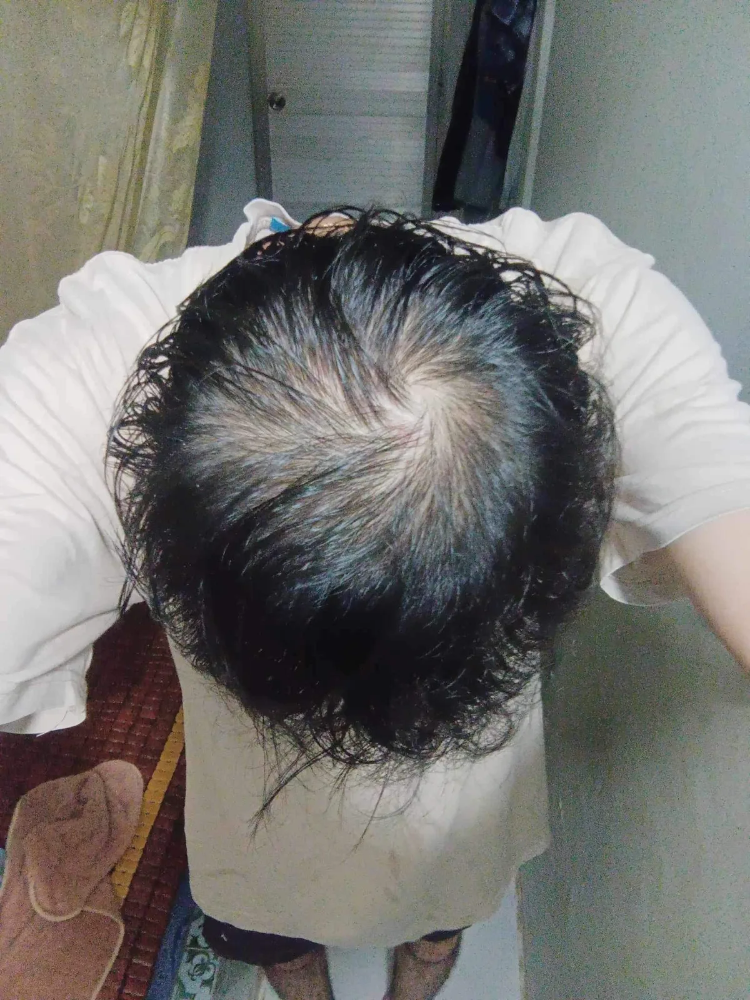
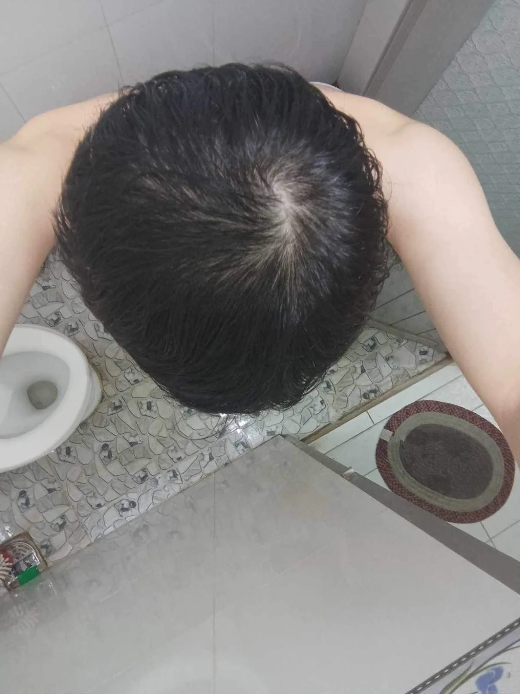

Case
HLS-005
Condition
Male-pattern hair loss
Period
3 months




At three months, the follow-up photographs show greater visible coverage across the frontal scalp and crown.
Photographed under different conditions; fixed panels preserve each original view.